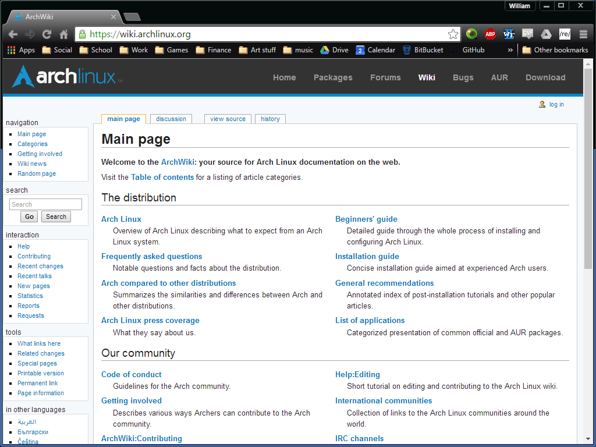

Affordance
ArchWiki
The ArchWiki website has always been a pinnicle of good design, providing everything that an aspiring archlinux user needs from beginner to pro.
The ArchWiki website has always been a pinnicle of good design, providing everything that an aspiring archlinux user needs from beginner to pro.
Google drive is auto synced filesystem that uses a large variety of propriatary and third party self contained webpage based tools to edit files of all types. It's a prefect example of modularity as each system is completely self contained to do it's task.
Michigan states website design has always been about making things easy to find.
Dash is a pretty cool website- each project is a single button. Other than a few bugs in the final projects, it shows exactly what a good website should look like!
Youtube is used for videos all over the world: For most users it's just important that specific videos be easily searchable and linkable. Tutorials and the like. For the powerusers however, it's the real tools of youtube that shine. The spacebar-scroll-halfway-down-the-screen instead of pausing is a brilliant streak. Youtube best showcases it's ability to show you videos when you're trying to find videos you haven't seen yet by specific artists: It knows you'd rather re-watch the same video over and over.